My Projects
BackSTIP Sipencatar 🎓
About Project
A web-based admission system that manages the entire cadet recruitment process, including applicant registration, document submission, admission selection, examination schedules, and announcement of admission results.

The system supports two primary user roles:
👤 Prospective Cadet (Applicant)
Prospective cadets can create an account to participate in the admission process. Through the system, they can:
- ✔ Create and activate an admission account.
- ✔ Complete personal and academic information.
- ✔ Upload all required admission documents.
- ✔ Apply for the active admission period.
- ✔ Monitor the status of document verification and selection stages.
- ✔ View admission results and selection announcements.


👨💼 Administrator
Administrators manage the entire admission process through a centralized administration panel with the following modules:
- ✔ Dashboard – Monitor admission activities and overall system status.
- ✔ General Reference – Manage master data and general reference information.
- ✔ Academic Reference – Configure academic data and admission settings.
- ✔ Master Data – Manage required documents, upload limits, selection stages, examination types, and admission periods.
- ✔ Selection Management – Verify applicant documents, manage selection stages, and determine successful applicants.
- ✔ Reports – Generate admission transaction reports and administrative summaries.
- ✔ System Management – Configure system settings and operational parameters.
- ✔ User Management – Manage administrator accounts, roles, and access permissions.
- ✔ Landing Page Management – Update public information, announcements, and website content.
- ✔ Application Settings – Manage system configuration, administrative requirements, applicant password reset, applicant email removal, and manual applicant account activation.
STIP Register 📝
About Project
A web-based registration system for admitted cadets, supporting document verification, re-registration, virtual account payment, NRP generation, student data management, and administrative reporting.

The system supports two primary user roles:
👤 Cadet (Participant)
Accepted cadets are required to register an account before completing the re-registration process. Through the system, they can:
- ✔ Create and activate their registration account.
- ✔ Complete personal, academic, and administrative information.
- ✔ Upload all required registration documents.
- ✔ Monitor document verification status.
- ✔ Receive a BNI Virtual Account (VA) code for registration payment.
- ✔ Complete the re-registration process for the active admission period.


👨💼 Administrator
Administrators manage the entire re-registration process through a centralized administration panel, including:
- ✔ Dashboard – Monitor registration activities and overall system status.
- ✔ General Reference – Manage master data and general reference information.
- ✔ Academic Reference – Configure academic data and registration settings.
- ✔ Registration – Manage cadet registrations, document verification, NRP generation, and re-registration workflows.
- ✔ Reports – Generate registration, payment, cadet, and administrative reports.
- ✔ System Management – Configure system settings and operational parameters.
- ✔ User Management – Manage administrator accounts, roles, and permissions.
- ✔ Landing Page Management – Update public website content and announcements.
- ✔ Application Settings – Manage system configuration, NRP settings, payment types, payment configuration, IP whitelist, print templates, cadet user accounts, password reset, and manual account activation.
- ✔ BNI Callback Logs – Monitor and validate Virtual Account payment callbacks from BNI integration.
STIP Magister 🎓
About Project
STIP Magister is a web-based admission system developed for the Master's Degree Program (S2) at Sekolah Tinggi Ilmu Pelayaran (STIP) Jakarta. The platform streamlines the postgraduate admission process by providing an integrated system for online registration, document submission, admission selection, and administrative management.
The system enables prospective students to complete the entire admission process digitally while allowing administrators to efficiently manage applicant data, selection stages, and academic administration.

The system supports two primary user roles:
👤 Prospective Student (Applicant)
Prospective students can create an account and complete the online admission process through the system. They can:
- ✔ Create and activate an admission account.
- ✔ Complete personal and educational information.
- ✔ Upload all required admission documents.
- ✔ Apply for the active admission period.
- ✔ Monitor document verification and selection status.
- ✔ View admission results and re-registration information.


👨💼 Administrator
Administrators manage the entire postgraduate admission process through a centralized administration panel with the following modules:
- ✔ Dashboard – Monitor admission activities and overall system status.
- ✔ General Reference – Manage master data and general reference information.
- ✔ Academic Reference – Configure academic data and admission settings.
- ✔ Master Data – Manage required documents, selection stages, examination types, and admission periods.
- ✔ Selection Management – Verify applicant documents, manage selection stages, process re-registration, and determine successful applicants.
- ✔ Reports – Generate admission transaction reports and administrative summaries.
- ✔ System Management – Configure system settings and operational parameters.
- ✔ User Management – Manage administrator accounts, roles, and access permissions.
- ✔ Landing Page Management – Update public information, announcements, and website content.
- ✔ Application Settings – Manage system configuration, administrative requirements, student password reset, student email removal, and manual student account activation.
STIP Asset 🏢
About Project
STIP Asset is a web-based public facility reservation system developed for Sekolah Tinggi Ilmu Pelayaran (STIP) Jakarta. The platform enables the public to reserve accommodation and other public service facilities online through a centralized reservation system.
The application simplifies the booking process by allowing users to register, submit reservation requests, select available facilities, and manage their bookings, while providing administrators with tools to efficiently manage assets, reservations, and public service information.


The system supports two primary user roles:
👤 Customer
Customers are required to create an account before making a reservation. Through the system, they can:
- ✔ Register and activate a customer account.
- ✔ Browse available public facilities and accommodations.
- ✔ Select check-in date and reservation duration.
- ✔ Choose optional services, such as breakfast.
- ✔ View available rooms, facilities, and booking costs.
- ✔ Submit online reservation requests.
- ✔ Review booking details before confirmation.
- ✔ Cancel reservations according to the cancellation policy.
- ✔ Receive booking status updates and reservation information.


👨💼 Administrator
Administrators manage the entire reservation system through a centralized administration panel with the following modules:
- ✔ Dashboard – Monitor reservation activities, facility availability, and overall system performance.
- ✔ User Management – Manage customer accounts and administrator access.
- ✔ Asset Management – Manage public facilities, accommodation assets, and asset availability.
- ✔ Asset Locking – Block or reserve assets that are temporarily unavailable for booking.
- ✔ Reservation Management – Process reservation requests and monitor booking status.
- ✔ Reservation Cancellation – Review and manage customer cancellation requests.
- ✔ Cancellation Settings – Configure reservation cancellation policies and rules.
- ✔ Transaction List – Monitor booking transactions and payment records.
- ✔ Feedback Management – Manage customer feedback, suggestions, and service evaluations.
- ✔ Gallery Management – Manage facility images displayed on the website.
- ✔ News Management – Publish announcements and news updates.
- ✔ Public Services – Manage public service information and facility details.
- ✔ System Settings – Configure application settings and operational parameters.
Job Tender 📋
About Project
Job Tender is a web-based internal recruitment management system developed for Petrokimia Gresik to streamline employee career mobility and internal hiring through a centralized platform. The system enables work units to publish job vacancies while allowing employees to apply for available positions online.


The platform manages the complete recruitment lifecycle, from job posting, application submission, multi-stage candidate verification, competency assessment, interview scheduling, to recruitment announcements. With role-based access control (RBAC), each user is provided with features and permissions according to their responsibilities, ensuring a secure, transparent, and efficient recruitment process.

The system supports three main user roles:
👨💼 Administrator, 🏢 Work Unit, 👤 Employee
Job Tender Workflow
The recruitment process follows a structured workflow to ensure every applicant is evaluated fairly and consistently before proceeding to the next stage.
- 🏢 Job Vacancy Creation – The Administrator or Work Unit publishes available internal positions.
- 👤 Employee Application – Employees submit applications for open positions.
- ✅ Initial Screening – Applications are reviewed based on basic eligibility requirements.
- 📄 Administrative Verification – Supporting documents and administrative requirements are validated.
- 🎯 Competency Assessment – Candidates are evaluated based on qualifications and competencies.
- 📅 Interview Scheduling – Qualified candidates are scheduled for interviews by the Administrator or Work Unit.
EHRD (Executive HR Dashboard) 👨💼
About Project
EHRD (Executive HR Dashboard) is a web-based executive dashboard developed for PT Petrokimia Gresik to provide comprehensive employee information that supports strategic workforce planning and promotion decisions. The platform enables executives to access key employee data, including organizational structure, positions, job family, competency assessments, talent categories, career history, and personal information through an integrated dashboard.
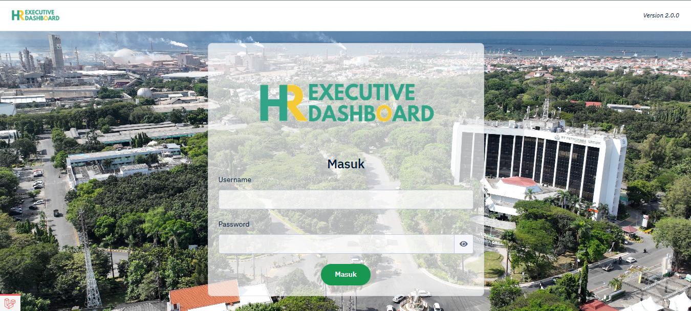
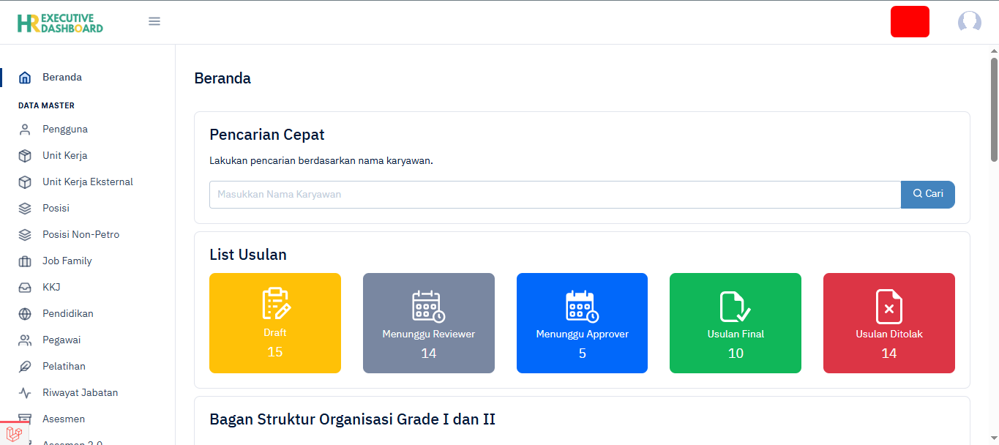
The system features role-based access control (RBAC) for Administrators, VP/SVP, Board of Directors, and RHI, with secure access to confidential information through OTP verification. It also includes advanced search, job profiling, succession ranking, organizational structure management, career profile enhancement, and database integration, improving decision-making efficiency, data accuracy, and workforce management.
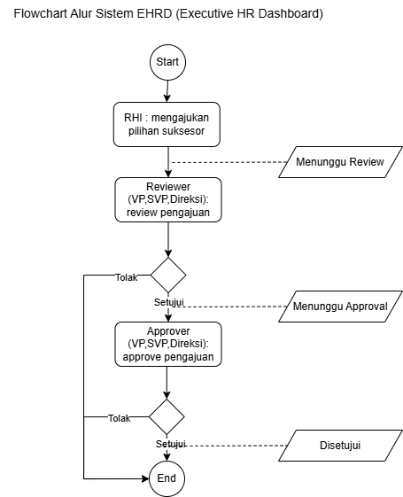
The system supports four main user roles:
EHRD Workflow
The EHRD workflow follows a structured review and approval process to ensure every succession proposal is properly evaluated and authorized before being finalized.
- 📝 Successor Proposal Submission – RHI submits a successor candidate proposal through the EHRD system based on organizational requirements and workforce planning.
- 🔎 Proposal Review – The Reviewer (VP, SVP, or Board of Directors) evaluates the submitted proposal for suitability, completeness, and alignment with succession planning objectives. Rejected proposals are returned to RHI for revision.
- ✅ Proposal Approval – The Approver (VP, SVP, or Board of Directors) reviews and authorizes the proposed successor candidate. If rejected, the proposal is returned for further revision.
- 🎯 Final Approval – Once approved, the succession proposal is officially accepted and recorded within the EHRD system, making it available for executive decision-making and future workforce planning.
PTS (Pemangku Tugas Sementara) 👥
About Project
PTS (Pemangku Tugas Sementara) is a web-based workforce assignment management system developed for PT Petrokimia Gresik to streamline the submission, approval, and monitoring of temporary assignment requests (Pemangku Tugas Sementara/PTS). The platform enables employees to submit assignment proposals digitally while allowing authorized approvers to review, validate, and approve requests through a structured workflow.


The system supports the complete assignment lifecycle, including proposal submission, multi-level approval, assignment letter management, notification services, and real-time monitoring. It also accommodates PGS (Pengganti Sementara) and PLT (Pelaksana Tugas) assignment scenarios, with dedicated workflows for proposals involving or not involving employee replacement, as well as short-term assignments of less than 29 days. By centralizing the process, the application improves administrative efficiency, transparency, and document traceability across the organization.

The system supports eight main user roles:
PTS Workflow
The PTS workflow follows a structured approval and evaluation process to ensure every temporary assignment proposal is reviewed, validated, and authorized by the appropriate stakeholders before the official assignment letter is issued.
- 📝 Proposal Submission – The Drafter creates and submits a PGS/PTS proposal.
- 🔎 Proposal Review – The Reviewer validates the submitted proposal for completeness and compliance.
- ✅ Approval – The Approver reviews and authorizes eligible proposals.
- 🏢 HR Evaluation – BANG SDM evaluates organizational and workforce requirements.
- 💰 Final Evaluation – Remuneration and BANG SDM perform the final evaluation before assignment issuance.
- 📄 Assignment Letter Generation – The system generates the Temporary Assignment Letter (ST).
- ✔️ ST Approval – The assignment letter is officially approved and validated before becoming effective.
- 🚀 PETROSTAR Integration – The approved assignment data is automatically synchronized with the PETROSTAR system.
RMP (Rotation, Mutation, and Promotion) 🔄
About Project
RMP (Rotation, Mutation, and Promotion) is a web-based employee career movement management system developed for PT Petrokimia Gresik to streamline the submission, approval, and monitoring of Rotation, Mutation, and Promotion (RMP) proposals in accordance with the company's grading policies. The platform enables eligible employees (Grade 3 and above) to submit RMP proposals digitally while allowing authorized stakeholders to review, evaluate, and approve requests through a structured workflow.
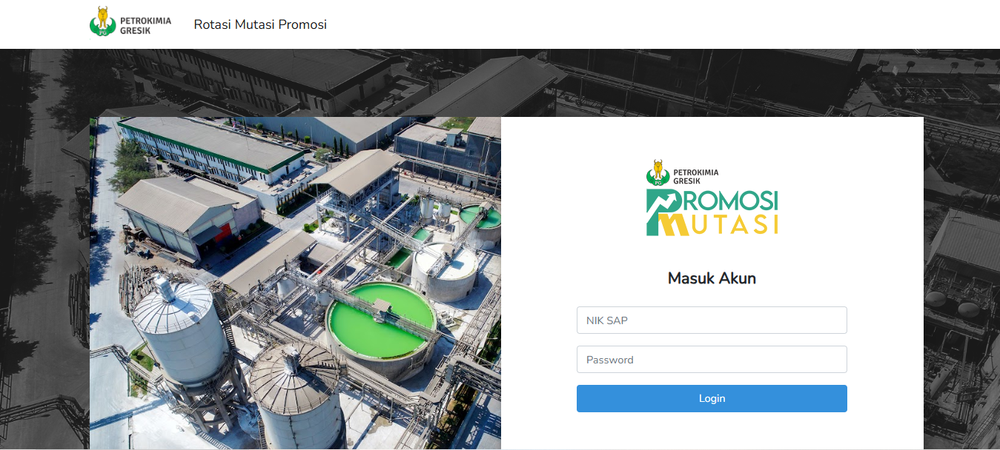
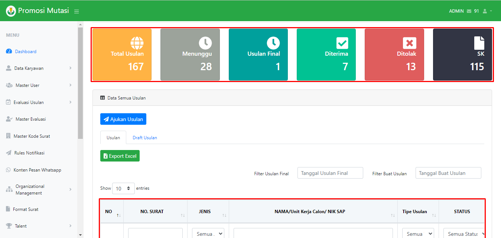
The system supports the complete RMP document lifecycle, including proposal submission, multi-level evaluation and approval, final RMP letter generation, and real-time proposal tracking. It also provides dedicated modules for proposal management, evaluation, final letter processing, and monitoring, improving administrative efficiency, transparency, and document traceability throughout the employee career movement process.
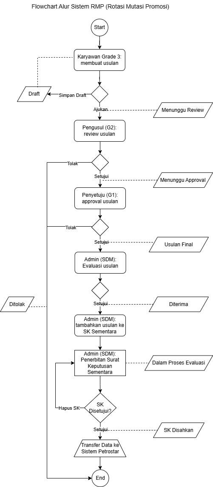
The system supports seven main user roles:
RMP Workflow
The RMP workflow follows a structured review, approval, and evaluation process to ensure every Rotation, Mutation, and Promotion proposal is properly assessed, authorized, and documented before being officially implemented.
- 📝 Proposal Submission – Eligible employees (Grade 3 and above) create and submit an RMP proposal. Proposals can also be saved as drafts before submission.
- 🔎 Proposal Review – The Proposer (Grade 2) reviews the submitted proposal for completeness and accuracy before forwarding it to the next approval stage.
- ✅ Approval – The Approver (Grade 1) reviews and authorizes eligible proposals. Approved proposals proceed as final proposals, while rejected proposals are returned for revision.
- 📋 HR Evaluation – The SDM Administrator evaluates the approved proposal to ensure compliance with organizational policies and workforce requirements.
- 📥 Proposal Acceptance – Approved proposals are accepted and recorded for further processing. Rejected proposals are returned to the applicant.
- 📑 Temporary Decree Preparation – The SDM Administrator adds the approved proposal to the Temporary Decree (SK Sementara) for further evaluation.
- 📄 Temporary Decree Issuance – The SDM Administrator generates the Temporary Decree (SK Sementara), which remains under evaluation until final approval is obtained.
- ✔️ SK Approval – The Temporary Decree is reviewed and officially approved. If rejected, it may be removed from the evaluation process for revision.
- 🚀 PETROSTAR Integration – Once the Temporary Decree is approved, the finalized RMP data is automatically synchronized with the PETROSTAR system.
SUPER (Sistem Uraian Pekerjaan) 📑
About Project
SUPER (Sistem Uraian Pekerjaan) is a web-based job description management system developed for PT Petrokimia Gresik to streamline the submission, approval, and monitoring of employee job descriptions. The platform enables employees to submit job description documents using standardized templates while allowing authorized approvers to review and approve submissions through a structured workflow.
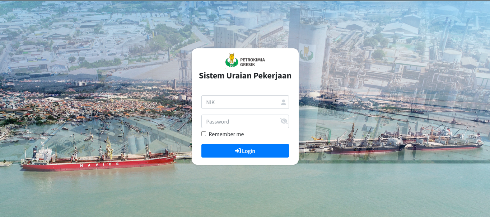
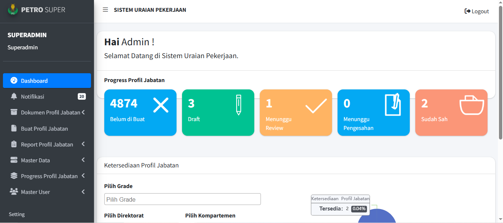
The system includes role-based access control (RBAC) and features such as document preview, job profile management, approval comment highlighting, categorized notifications, upload history tracking, user data export, and integration with external APIs for employee position synchronization. By digitizing the entire process, the application improves administrative efficiency, transparency, and document management across the organization.
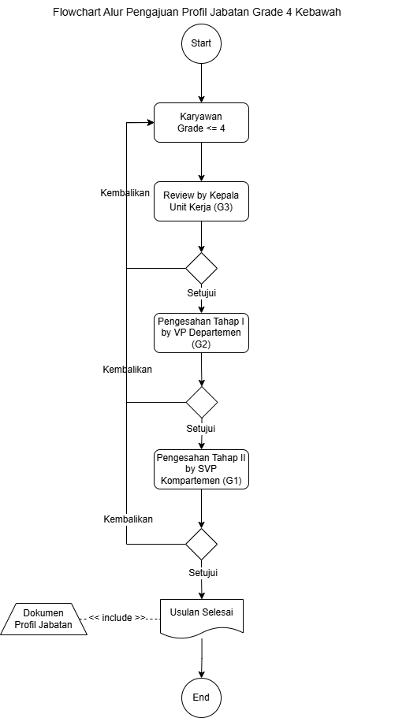
The system supports four main user roles:
SUPER Workflow
The SUPER workflow follows a structured review and approval process to ensure every job profile proposal is properly validated and authorized before becoming an official job description document.
- 📝 Job Profile Submission – Employees (Grade 4 and below) create and submit a job profile proposal through the SUPER system using the standardized document template.
- 🔎 Department Review – The Head of Work Unit (Grade 3) reviews the submitted job profile for completeness, accuracy, and compliance. Proposals requiring revision are returned to the employee.
- ✅ Stage I Approval – The Department VP (Grade 2) evaluates and approves the reviewed proposal. Rejected proposals are returned for revision.
- ✔️ Stage II Approval – The Department SVP (Grade 1) performs the final review and approval. If necessary, the proposal is returned to the employee for further revision.
- 📄 Job Profile Finalization – Once fully approved, the proposal is finalized and officially recorded as the employee's Job Profile document within the SUPER system.
ORNAMEN (Organization Management System) 📑
About Project
ORNAMEN (Organization Management System) is a web-based organizational structure management system developed for PT Petrokimia Gresik to streamline the planning, submission, and management of organizational structures. The platform enables users to propose organizational structure changes or create new organizational structures, while authorized personnel review, manage, and approve submissions through a structured workflow.
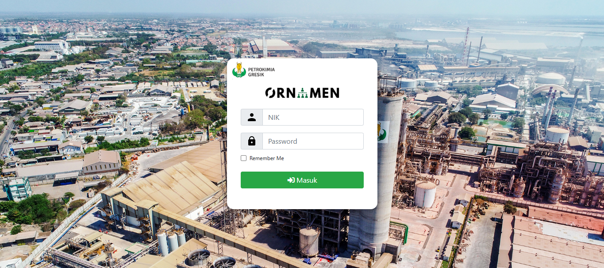
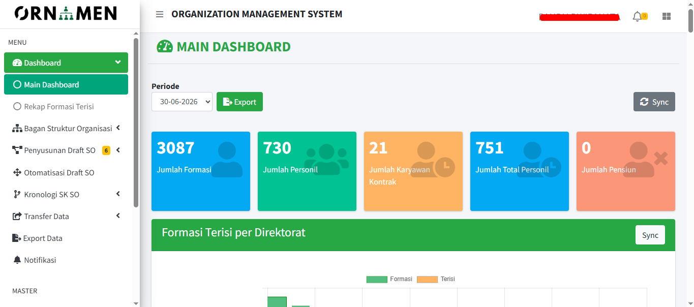
The system provides comprehensive organizational dashboards, including filled position formations, organizational chart visualization, organizational structure drafting by work units, automatic conversion of organizational structures into KO-KP codes, and organizational decree (SK) chronology tracking. By digitizing these processes, ORNAMEN improves organizational planning, data consistency, and administrative efficiency across the company.
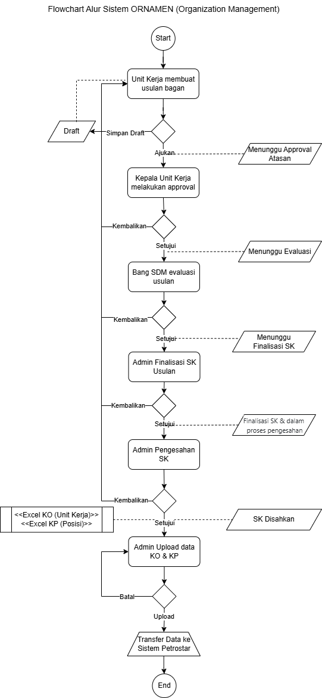
The system supports five main user roles:
ORNAMEN Workflow
The ORNAMEN workflow follows a structured review, evaluation, and approval process to ensure every organizational structure proposal is properly validated, authorized, and implemented before becoming an official organizational structure.
- 📝 Organization Structure Proposal – The Work Unit creates and submits a new organizational structure proposal or a revision to an existing structure. Proposals can also be saved as drafts before submission.
- 👨💼 Manager Approval – The Head of Work Unit reviews and approves the submitted proposal. If revisions are required, the proposal is returned to the originating work unit.
- 📋 HR Evaluation – HR Management evaluates the approved proposal to ensure compliance with organizational policies, workforce planning, and structural requirements.
- 📄 Decree Finalization – The Administrator prepares and finalizes the Organizational Structure Decree (SK) based on the approved proposal before proceeding to the official authorization stage.
- ✔️ Decree Authorization – The finalized Organizational Structure Decree is reviewed and officially authorized. Approved structures become valid organizational records, while proposals requiring changes are returned for revision.
- 📂 KO & KP Data Upload – After the decree is approved, the Administrator uploads the corresponding KO (Work Unit) and KP (Position) data to synchronize the approved organizational structure.
- 🚀 PETROSTAR Integration – The validated KO and KP data is automatically transferred and synchronized with the PETROSTAR system, ensuring organizational information remains accurate and up to date across integrated applications.
HCDev (Human Capital Development) 🧑💻
About Project
Human Capital Development (HCDEV) is an integrated Human Resource Development platform developed for PT Petrokimia Gresik to support employee learning, competency development, and talent management initiatives. The system serves as a centralized portal that enables employees to access a wide range of HR development services aligned with the company's learning and development standards.
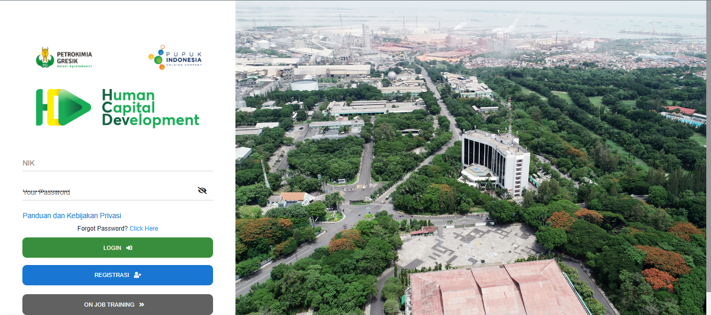
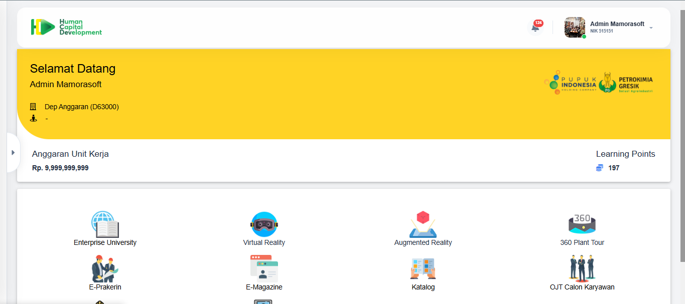
HCDEV provides comprehensive features, including Employee Profile, Training History, Submission Tracking, Scholarships, Sharing Knowledge, Certifications, Training Programs, Learning Stories, Learning Points, Reporting, On-the-Job Training (OJT) for prospective employees, Budget Management, Accountability Reports (LPJ), Offers, Vendor Management, Event Management, Room Reservation, Voucher Management, and various other modules that continue to be enhanced as part of the organization's digital transformation initiatives.
During my involvement in the HCDEV project, I contributed to the development and quality assurance of several key modules, including Inventory Borrowing, Room Reservation, Voucher Management, and Critical Knowledge Submission. The Voucher Management module enables employees to redeem vouchers earned through training programs and other corporate activities at authorized partner merchants integrated with the HCDEV ecosystem. Meanwhile, the Critical Knowledge Submission module facilitates the documentation and sharing of valuable departmental knowledge to support knowledge retention and organizational learning.
The platform is available across multiple platforms, including Web, Android, and iOS, ensuring seamless access to learning and development services anytime and anywhere.
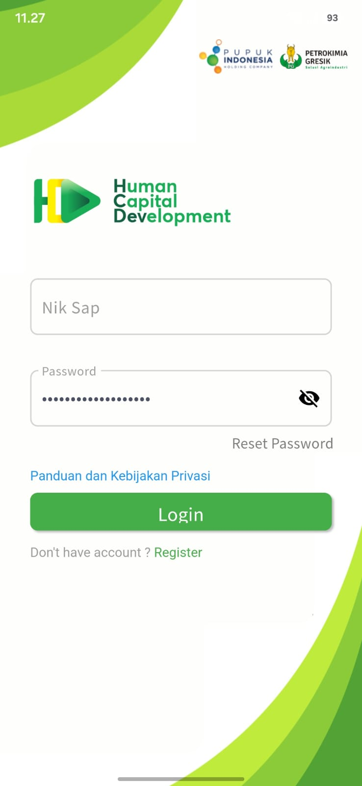
Login
Secure employee authentication for accessing the HCDEV platform.
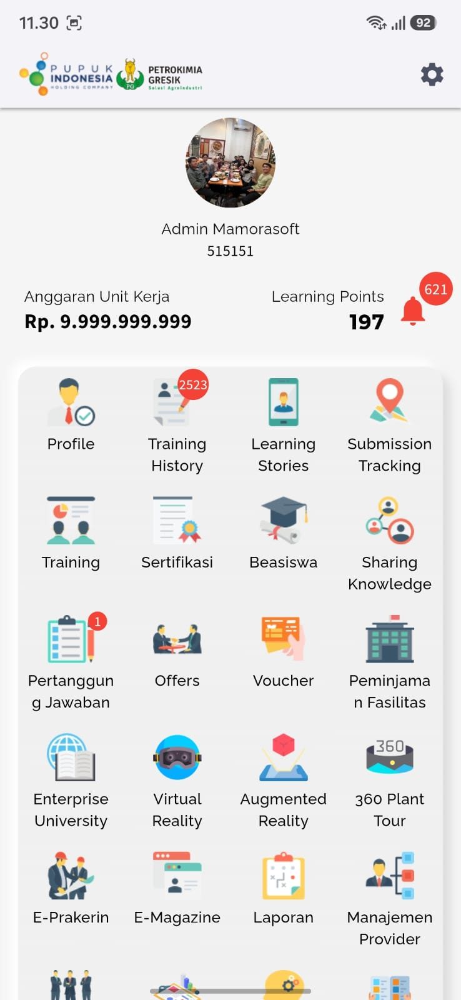
Main Menu
Centralized access to integrated Human Capital Development services and employee self-service features.
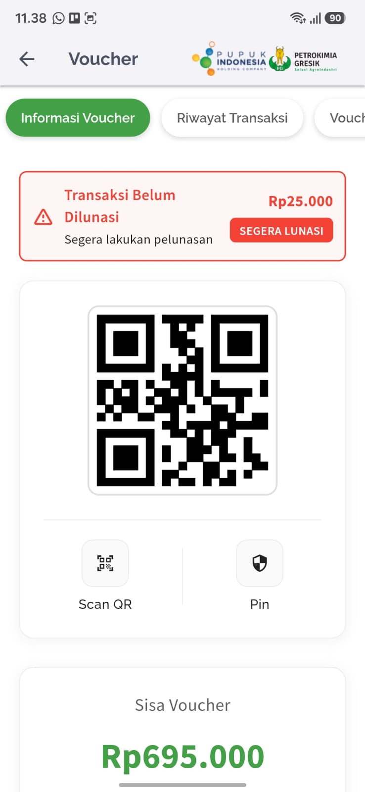
Voucher Information
Displays voucher balance, QR code, and voucher details for redemption at authorized partner merchants.
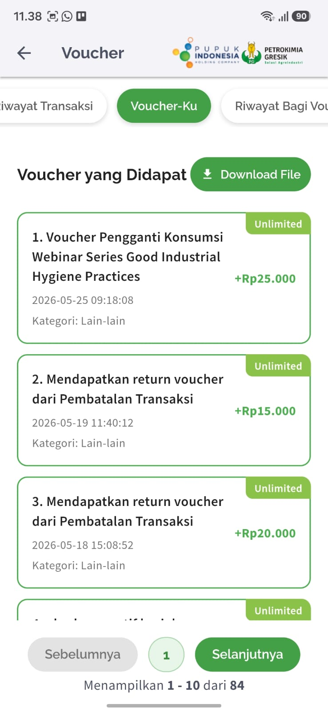
My Vouchers
Shows the employee's voucher history, including earned vouchers, redemption status, and transaction records.
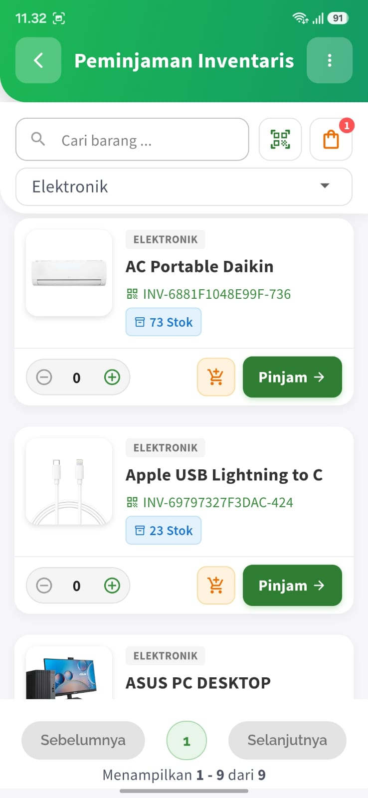
Inventory Borrowing
Browse available company assets and submit inventory borrowing requests.
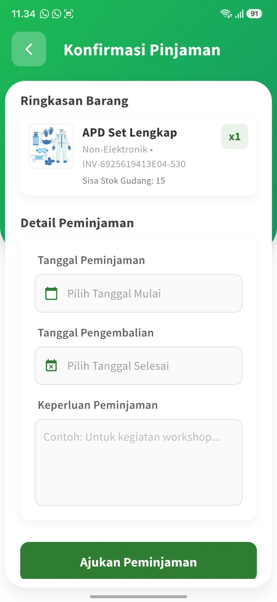
Inventory Borrowing Form
Complete borrowing details before submitting requests for approval.
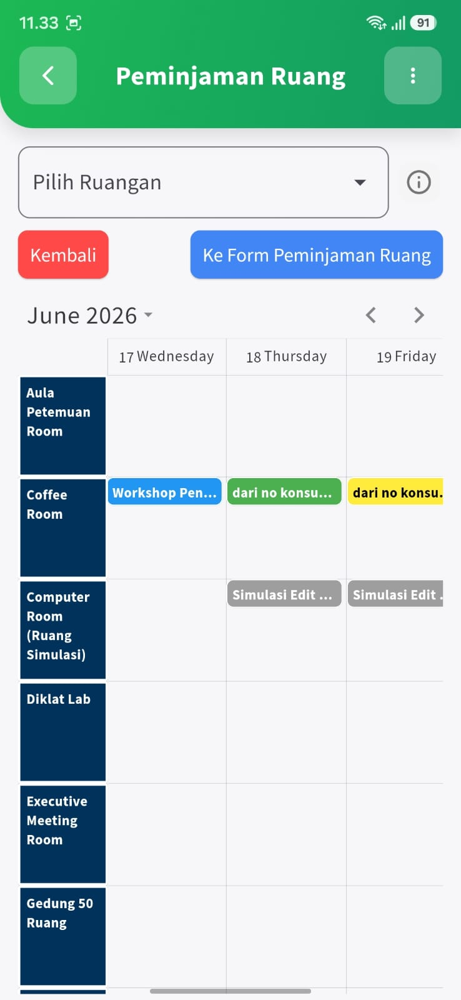
Room Reservation
View room schedules and reserve company facilities with ease.
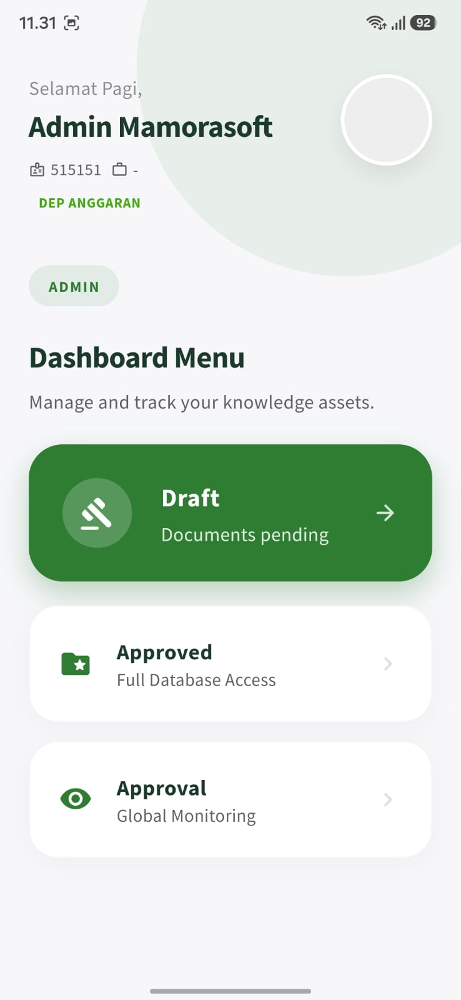
Critical Knowledge
Submit and manage critical knowledge to support organizational knowledge sharing.
📦 Inventory Borrowing
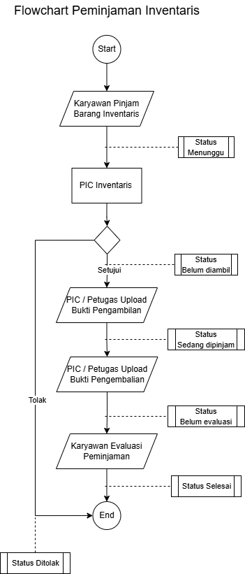
🏢 Room Reservation
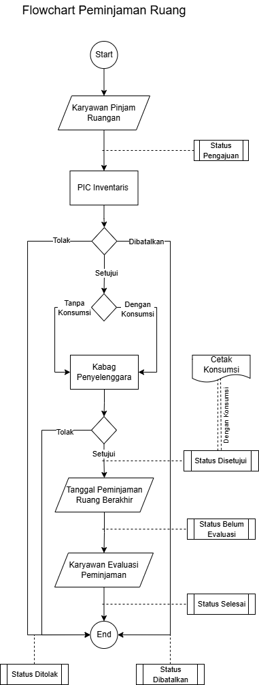
SERGIO (Sistem Registrasi Inovasi Online) 🏆
About Project
SERGIO is a web-based innovation management system developed for PT Petrokimia Gresik to facilitate the submission, evaluation, and monitoring of employee ideas and innovation groups (5R) across the organization. The platform enables employees to submit ideas digitally, collaborate with related work units, and manage innovation activities through an integrated workflow.
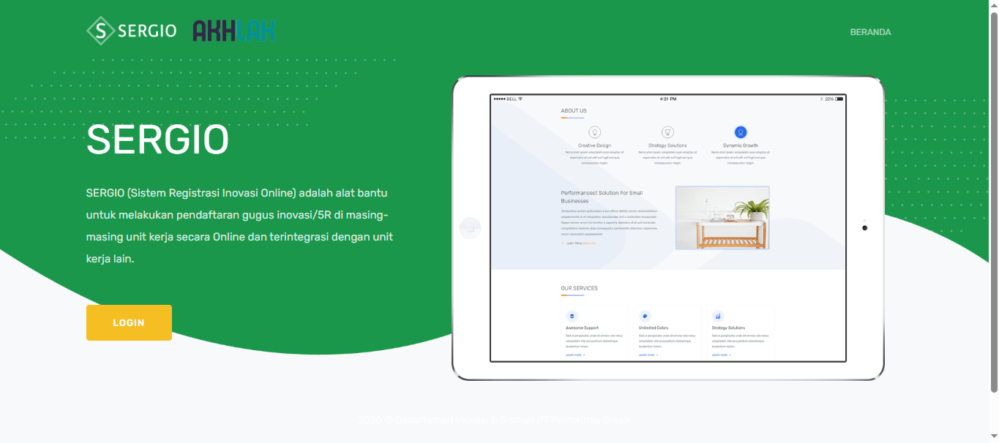
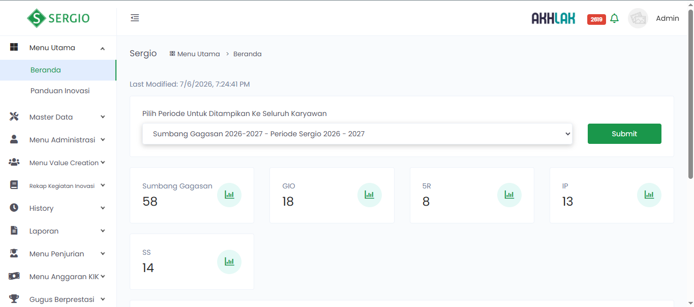
The system provides comprehensive features for idea management, innovation group (5R) administration, proposal submission, judge management, evaluation, and reporting. As part of this project, I contributed to the development of the KIK (Kompartemen Innovation Convention) Budget Proposal module, which enables SPTK Drafters to submit innovation budget proposals for approval by authorized stakeholders. Once approved, the system generates the official KIK budget document, improving the efficiency, transparency, and traceability of the innovation funding process.
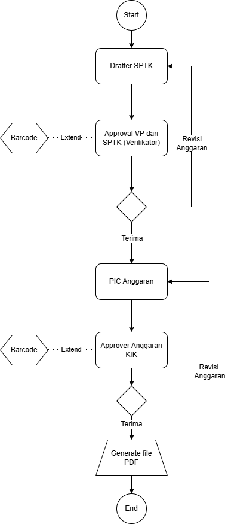
The system supports five main user roles:
SERGIO Workflow (KIK Budget Proposal)
The KIK Budget Proposal workflow follows a structured verification and approval process to ensure every innovation budget request is properly reviewed, authorized, and documented before the official budget document is generated.
- 📝 Budget Proposal Submission – The SPTK Drafter prepares and submits a KIK (Kompartemen Innovation Convention) budget proposal through the SERGIO system. The proposal can also include supporting documents such as barcode-based attachments.
- 🔎 Proposal Verification – The SPTK VP (Verifier) reviews the submitted budget proposal to ensure its completeness, accuracy, and compliance with company requirements. Proposals requiring revisions are returned to the Drafter for updates.
- 💰 Budget Review – Once verified, the proposal is forwarded to the Budget PIC for budget allocation review and validation before the final approval process.
- ✅ Budget Approval – The KIK Budget Approver reviews and authorizes the proposed budget. If revisions are required, the proposal is returned to the Budget PIC for further adjustment.
- 📄 Budget Document Generation – After receiving final approval, the system automatically generates the official KIK Budget document in PDF format, providing a standardized and traceable record of the approved budget proposal.
PETROSTAR ⭐
About Project
PETROSTAR V2 is an integrated Human Resource Information System (HRIS) developed for PT Petrokimia Gresik to centralize employee administration, workforce management, and digital HR services. The platform integrates multiple internal HR applications to ensure employee data remains synchronized while supporting efficient, accurate, and transparent human resource operations. PETROSTAR consists of two primary modules: Administration and Onboarding, each designed to support different aspects of employee lifecycle management.
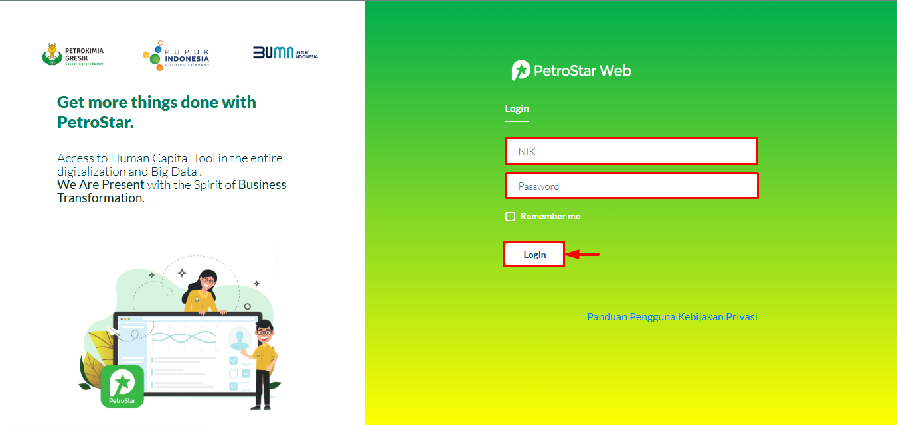
Note: As PETROSTAR manages confidential HR and employee administration data, only general system interfaces and representative features are showcased in this portfolio. Sensitive information has been anonymized or omitted in accordance with PT Petrokimia Gresik's data confidentiality and security policies.
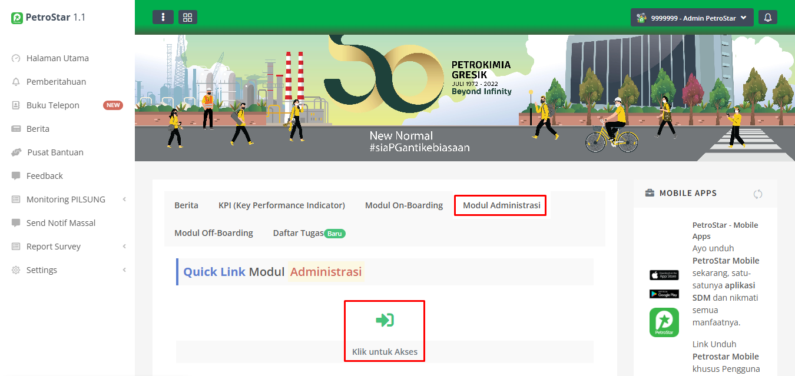
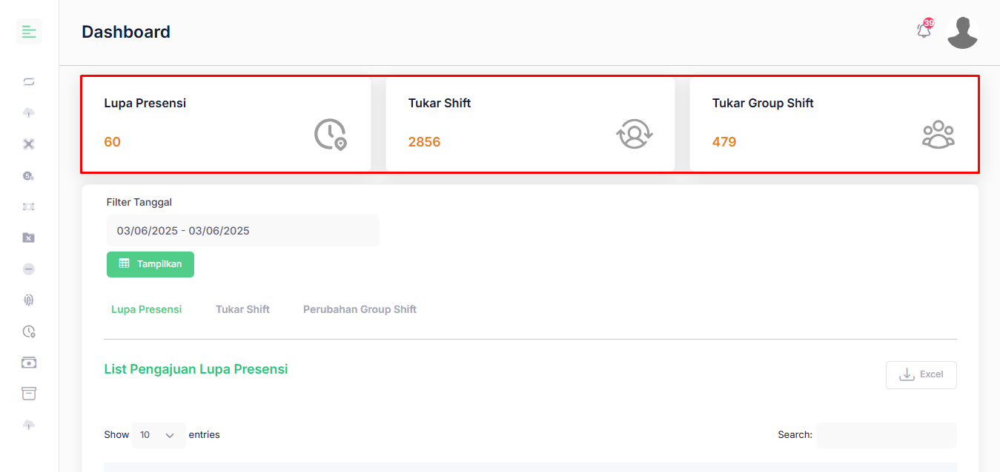
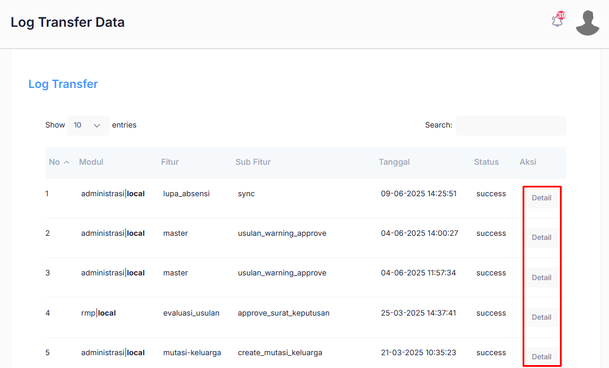
🗂️ Administration Module
The Administration Module serves as the core HR administration platform within PETROSTAR V2, digitizing and streamlining a wide range of employee administrative processes. The module supports attendance correction requests, shift exchange and shift group management, acting position (PGS/PTS) administration, warning management, access management, website configuration, data transfer, RMP decree synchronization, data export, and comprehensive master data management.
The module also manages employee compensation and allowance administration, including shift allowances, overtime, PGS/PTS allowances, regional allowances, major leave assistance, years of service, occupational risk, project allowances, and other compensation programs. In addition, it provides employee data management for education history, family information, address changes, parent information, salary history, major leave, and PGS/PTS termination.
As the integration hub of PETROSTAR, the Administration Module synchronizes data with other enterprise applications such as RMP, PTS, and ORNAMEN, ensuring organizational structures, employee positions, temporary assignments, and HR administrative data remain accurate and consistent across the company's HR ecosystem.
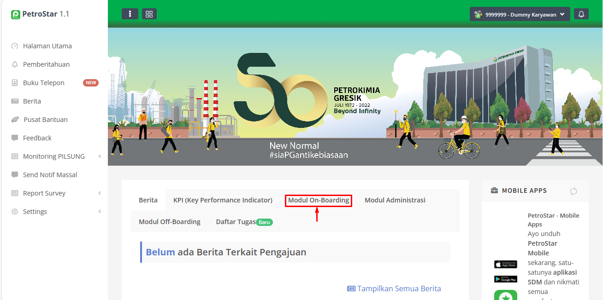
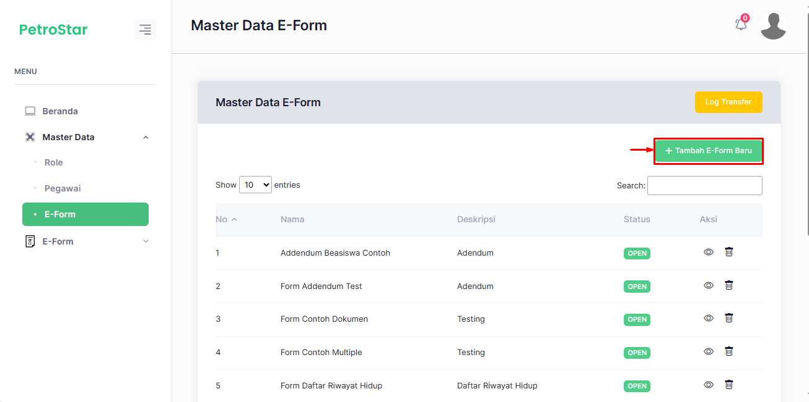
🚀 Onboarding Module
The Onboarding Module provides a digital e-form platform that simplifies employee onboarding and HR administrative requests. It enables employees to submit various electronic forms, including Major Leave, Warning Letters, and other HR-related requests through a structured approval workflow.
The module includes employee master data management, role configuration, e-form administration, approval processing, and synchronization log monitoring. By digitizing onboarding activities and administrative requests, the system improves operational efficiency, data consistency, and transparency while providing employees with a centralized platform for HR services.
SUMON (Subsidiary Monitoring) 📡
About Project
SUMON (Subsidiary Monitoring System) is a web-based monitoring platform developed for PT Petrokimia Gresik to centralize the management and oversight of subsidiary companies, affiliated companies, and the YPG Group. The system provides comprehensive insights into company profiles, executive positions, organizational performance, vacant positions, upcoming retirement periods, and executive tenure monitoring.


Through role-based access control (RBAC), authorized users can manage master data, monitor subsidiary performance reports, receive notifications, and access interactive dashboards that support strategic decision-making and improve corporate governance across the organization.

The system provides role-based access for users across subsidiary companies, affiliated companies, and the YPG Group. Current user roles include:
SUMON Workflow
The SUMON workflow provides a centralized process for managing subsidiary company data, organizational structures, and performance reports. It ensures that subsidiary information is properly maintained and that business performance reports are consistently collected, monitored, and made available for management evaluation.
- 🏢 Subsidiary Registration – The Super Administrator registers new subsidiary companies, affiliated companies, or YPG Group entities into the system.
- 🏛️ Organization Setup – The organizational structure and related information for each subsidiary are configured to establish the company profile within the system.
- ⚙️ Management Configuration – Management positions and organizational data are maintained to ensure accurate monitoring and reporting.
- 📊 Performance Report Import – The Super Administrator uploads performance reports through Excel, allowing the system to process and store business performance data for each subsidiary.
- 📈 Performance Monitoring – The system automatically organizes the imported data into comprehensive business performance reports, including:
- Real Performance Report (Current Year)
- RKAP Performance Report
- Real Performance Report (Previous Year)
- Production Report
- Sales Report
- Profit & Loss Report
- Financial Position Report
- Cash Flow Report
- Financial Ratio Report
PFC (Petrokimia Fishing Club) 🎣
About Project
Petrokimia Fishing Club (PFC) System is an integrated web-based platform developed to streamline the management of fishing tournaments from start to finish. The system enables organizers to manage participant and committee registrations, create and organize tournament events, conduct random fishing spot assignments, record real-time catch (strike) results, and generate comprehensive competition reports.
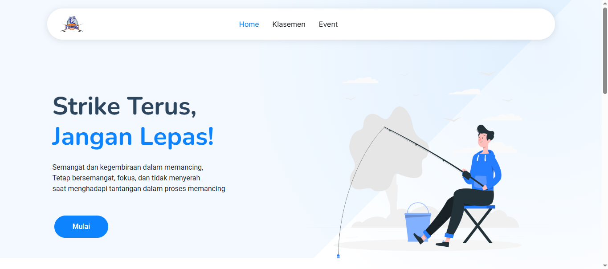
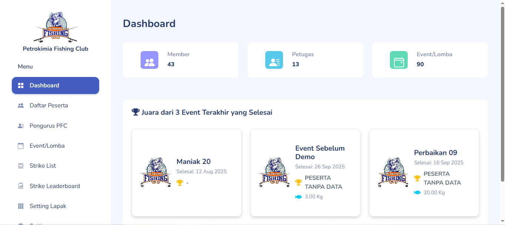
Designed to improve operational efficiency, transparency, and accuracy, the platform digitalizes the entire tournament workflow, reducing manual processes while ensuring fair participant management and well-organized event execution.
The Petrokimia Fishing Club (PFC) System provides two user roles: Administrator and Participant. Administrators are responsible for managing tournament operations, including participant registration, event management, fishing spot assignments, strike recording, and report generation. Participants can access the PFC website without logging in to view tournament information and other publicly available features.
👨💼 Administrator
🎣 Participant
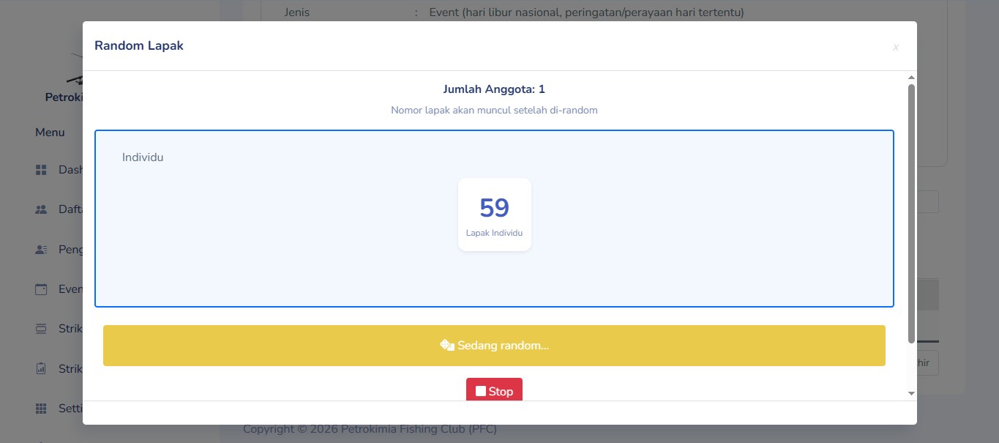
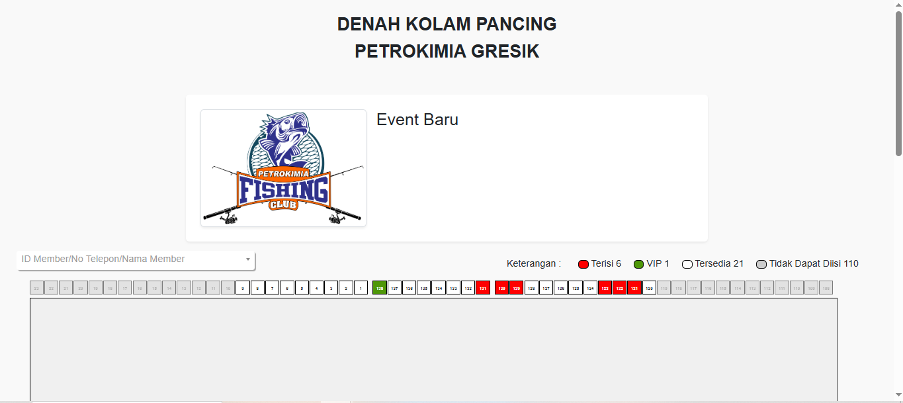
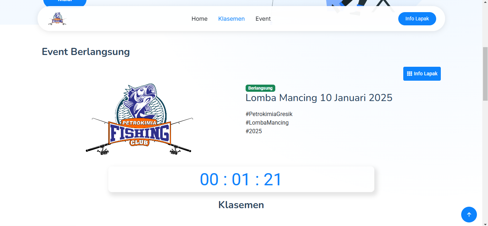
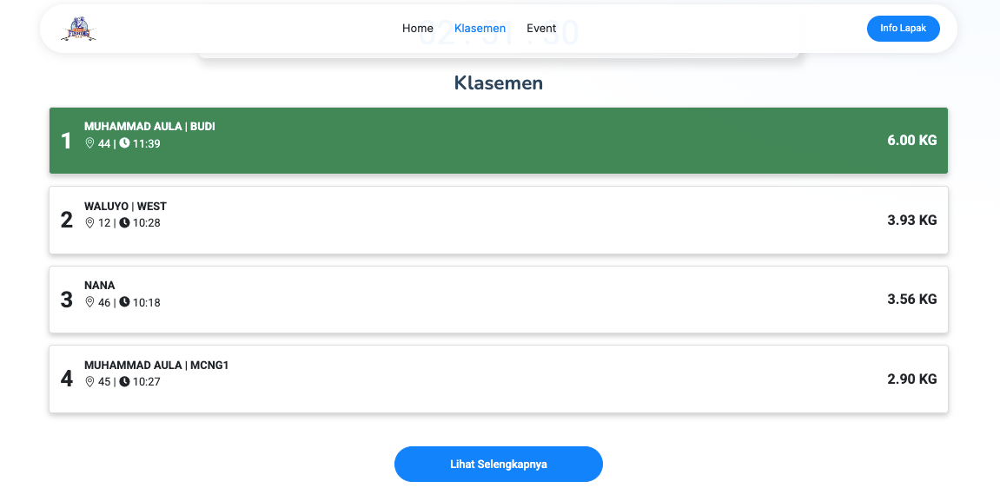
EHRDO (Ecosystem Human Resource Development & Organization) 📊
About Project
Ecosystem Human Resource Development & Organization (HRDO) System is an integrated web-based portal designed to centralize and streamline access to the Human Resource Development & Organization services at PT Petrokimia Gresik. The platform integrates multiple HR systems, including the Rotation, Mutasion & Promotion (RMP) System, Job Tender (JT) System, and Temporary Assignment (PTS) System, into a single ecosystem.
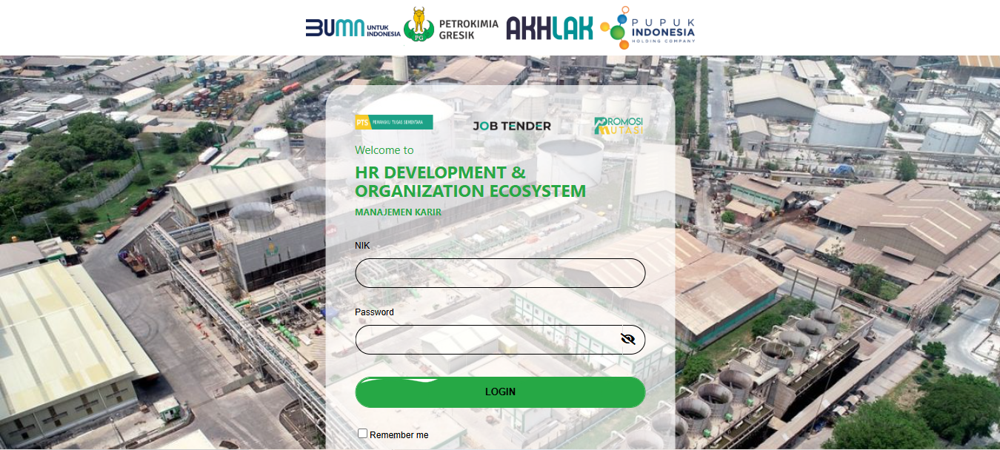
The system implements a Single Sign-On (SSO) approach, allowing employees to access all integrated HR services through a single authentication process based on their respective roles and permissions. This eliminates the need to log in separately to each application, improving user convenience, operational efficiency, and overall system accessibility.
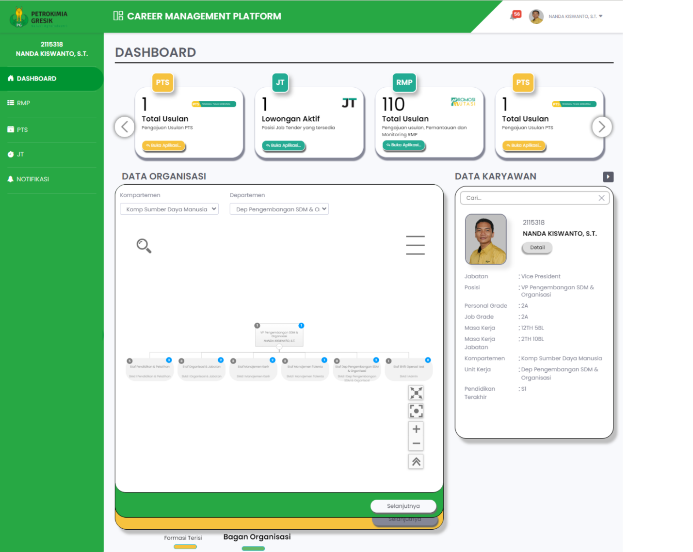
In addition to providing direct access to each integrated service, the portal features a centralized dashboard that displays key information, announcements, and updates from every HR system. By consolidating HR services into one platform, the Ecosystem HRDO System enhances digital transformation initiatives while delivering a seamless and user-friendly experience for employees.
⚡ PRIMA (Pemanfaatan RAB Otomatis Berbasis Machine Learning) 🤖
About Project
PRIMA (Pemanfaatan RAB Otomatis Berbasis Machine Learning) is a web-based application developed to accelerate the customer connection process by streamlining proposal submissions within UP3 Pinrang. The system enables branch employees to submit project proposals digitally, which are then processed through a structured approval workflow involving the appropriate stakeholders.

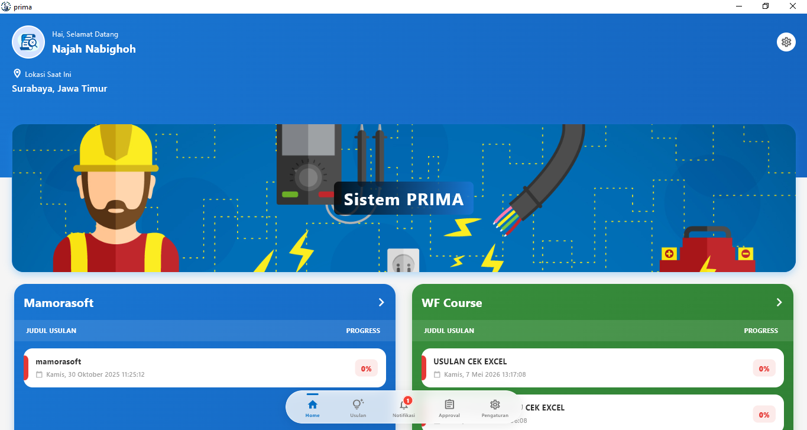
By integrating machine learning into the preparation of RAB (Rencana Anggaran Biaya), PRIMA helps improve efficiency, reduce manual work, and support faster decision-making during the proposal evaluation process. PRIMA also supports both online and offline proposal submissions, allowing users to continue working even without an internet connection.
System Roles
PRIMA implements a role-based access control mechanism consisting of three user roles:
- ⚙️ Administrator – Manages master data, system configurations, user access, and overall application settings.
- 📋 Branch (Cabang) – Submits proposal requests (Usulan) and monitors the status of submitted proposals.
- ✅ Head Office (Pusat) – Reviews and approves submitted proposals through a multi-level approval workflow.
Proposal Submission Workflow
The proposal submission process follows a structured approval workflow to ensure proper validation before recommendation results are generated:
- Branch Employee (Submit Proposal)
⬇️ - Head Office – Level 1 (First Approval)
⬇️ - Head Office – Level 2 (Final Approval)
⬇️ - Machine Learning Processing (RAB Recommendation Analysis)
⬇️ - Recommendation Report (Excel) containing the proposed RAB Priority Classification, categorized as Low, Medium, or High priority.
PRIMA is available on both Desktop and Mobile platforms, allowing users to submit proposals, perform approvals, and monitor progress anytime and anywhere.
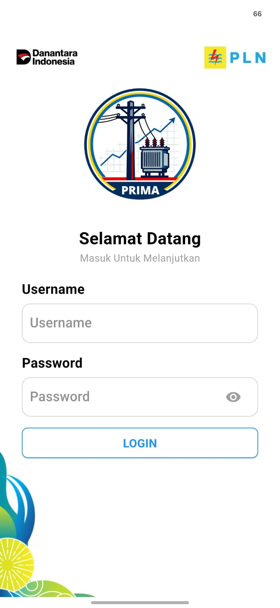
Login
Secure user authentication to access the PRIMA application.
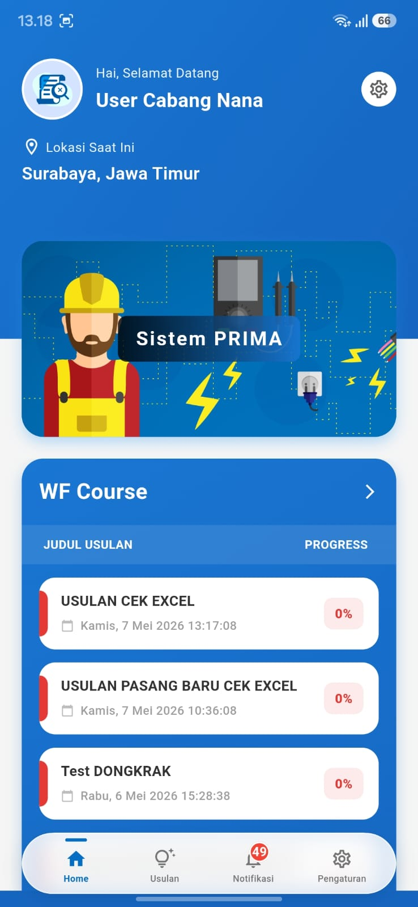
Home
Displays the main dashboard and quick access to system features.
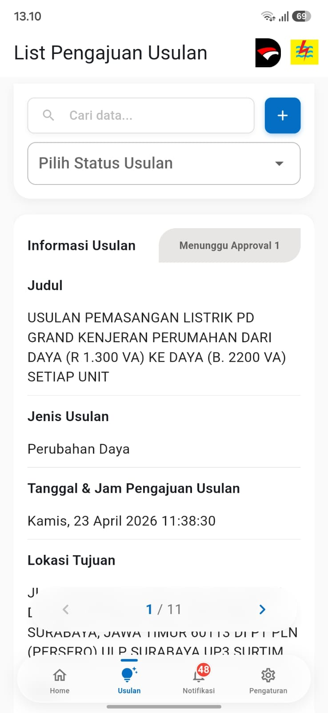
Proposal
Enables employees to create and manage proposal submissions.
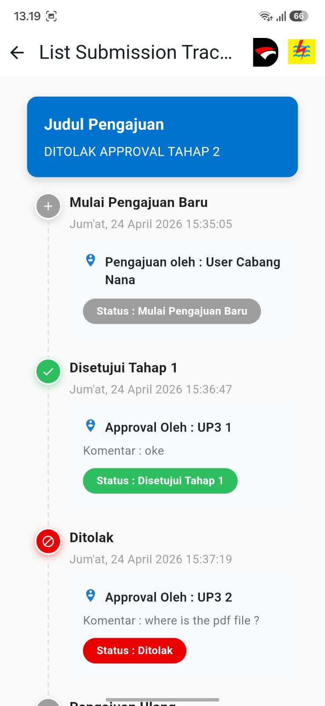
Submission Tracking
Tracks the status and approval progress of submitted proposals.
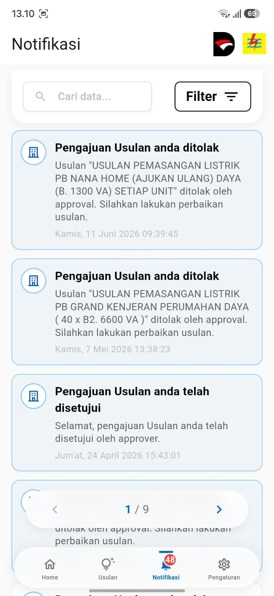
Notifications
Displays system updates and proposal status notifications.
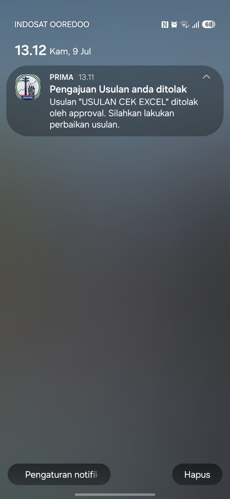
FCM Notifications
Receives real-time push notifications for important updates.
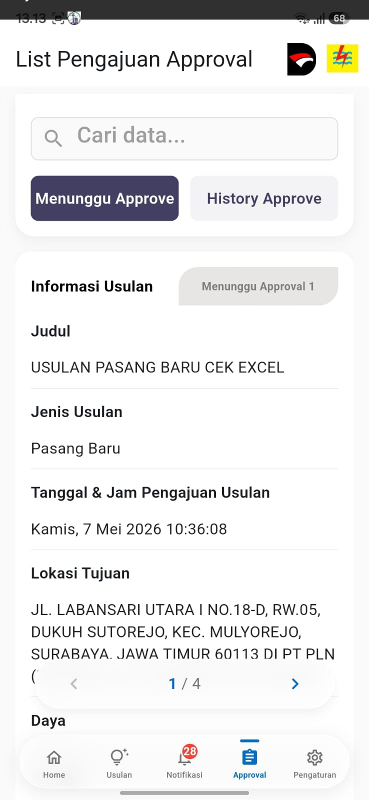
Approval
Review and approve submitted proposals.
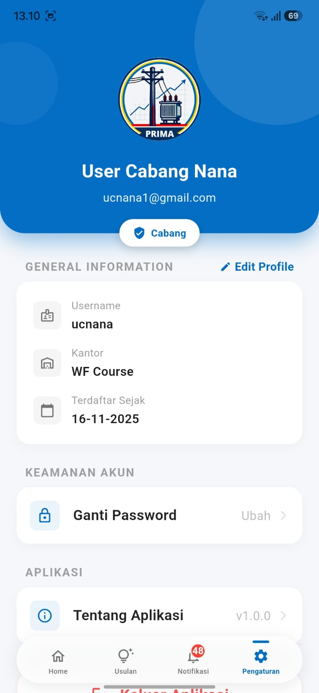
Settings
Manage account information and application preferences.
Magang 🎓
About Project
The Online Recruitment Test System is a web-based platform developed to support the recruitment process for internship participants at PT Pupuk Kujang Cikampek. The system serves as a centralized recruitment portal, providing applicants with comprehensive information regarding available internship and employment opportunities while streamlining the entire recruitment workflow.
👥 Roles
- 👨🎓 Participant – Applicants who register, activate their accounts, log in, complete their profiles, take online tests, and monitor their recruitment status.
- 👨💼 Administrator – Manages recruitment activities, including vacancies, participant data, online tests, evaluations, and recruitment results.
The platform manages each stage of the recruitment process, from vacancy announcements, online registration, and computer-based testing to candidate evaluation and final acceptance. By digitizing these processes, the system improves recruitment efficiency, minimizes administrative work, and provides a more structured and transparent experience for both applicants and recruitment administrators.
In addition, the system enables applicants to monitor the progress of their applications in real time, including test schedules, announcements, and recruitment status updates. This ensures clear communication throughout the selection process while enhancing accessibility, accuracy, and overall user experience.
RMP (Rotation, Mutation, and Promotion) 🔄
About Project
The RMP (Rotation, Mutation, and Promotion) System is a web-based employee career movement management platform implemented for PT Pupuk Kujang Cikampek. The system is based on the proven RMP framework developed by PT Petrokimia Gresik and has been adapted to align with PT Pupuk Kujang Cikampek's organizational structure, business processes, and operational requirements. It streamlines the submission, approval, and monitoring of Rotation, Mutation, and Promotion (RMP) proposals through a structured digital workflow. The platform enables authorized employees to submit RMP proposals electronically while allowing relevant stakeholders to review, evaluate, and approve requests efficiently, improving transparency, consistency, and overall workforce management.
The system supports the complete RMP document lifecycle, including proposal submission, multi-level evaluation and approval, final RMP letter generation, and real-time proposal tracking. It also provides dedicated modules for proposal management, evaluation, final letter processing, and monitoring, improving administrative efficiency, transparency, and document traceability throughout the employee career movement process.
The system supports seven main user roles:
RMP Workflow
The RMP workflow follows a structured review, approval, and evaluation process to ensure every Rotation, Mutation, and Promotion proposal is properly assessed, authorized, and documented before being officially implemented.
- 📝 Proposal Submission – Eligible employees (Grade 3 and above) create and submit an RMP proposal. Proposals can also be saved as drafts before submission.
- 🔎 Proposal Review – The Proposer (Grade 2) reviews the submitted proposal for completeness and accuracy before forwarding it to the next approval stage.
- ✅ Approval – The Approver (Grade 1) reviews and authorizes eligible proposals. Approved proposals proceed as final proposals, while rejected proposals are returned for revision.
- 📋 HR Evaluation – The SDM Administrator evaluates the approved proposal to ensure compliance with organizational policies and workforce requirements.
- 📥 Proposal Acceptance – Approved proposals are accepted and recorded for further processing. Rejected proposals are returned to the applicant.
- 📑 Temporary Decree Preparation – The SDM Administrator adds the approved proposal to the Temporary Decree (SK Sementara) for further evaluation.
- 📄 Temporary Decree Issuance – The SDM Administrator generates the Temporary Decree (SK Sementara), which remains under evaluation until final approval is obtained.
- ✔️ SK Approval – The Temporary Decree is reviewed and officially approved. If rejected, it may be removed from the evaluation process for revision.
- 🚀 PETROSTAR Integration – Once the Temporary Decree is approved, the finalized RMP data is automatically synchronized with the PETROSTAR system.
SUPER (Sistem Uraian Pekerjaan) 📑
About Project
SUPER (Sistem Uraian Pekerjaan) is a web-based platform implemented for PT Pupuk Kujang Cikampek by adopting and customizing the SUPER solution previously developed for PT Petrokimia Gresik. The system has been tailored to align with PT Pupuk Kujang Cikampek's organizational structure, business processes, and operational requirements while maintaining the core functionality of standardized job description management. It streamlines the submission, review, approval, and monitoring of employee job descriptions through a structured digital workflow. The platform enables employees to prepare and submit job description documents using standardized templates, while authorized reviewers and approvers can efficiently evaluate, approve, and manage submissions, improving consistency, transparency, and overall human resource administration.
The system includes role-based access control (RBAC) and features such as document preview, job profile management, approval comment highlighting, categorized notifications, upload history tracking, user data export, and integration with external APIs for employee position synchronization. By digitizing the entire process, the application improves administrative efficiency, transparency, and document management across the organization.
The system supports four main user roles:
SUPER Workflow
The SUPER workflow follows a structured review and approval process to ensure every job profile proposal is properly validated and authorized before becoming an official job description document.
- 📝 Job Profile Submission – Employees (Grade 4 and below) create and submit a job profile proposal through the SUPER system using the standardized document template.
- 🔎 Department Review – The Head of Work Unit (Grade 3) reviews the submitted job profile for completeness, accuracy, and compliance. Proposals requiring revision are returned to the employee.
- ✅ Stage I Approval – The Department VP (Grade 2) evaluates and approves the reviewed proposal. Rejected proposals are returned for revision.
- ✔️ Stage II Approval – The Department SVP (Grade 1) performs the final review and approval. If necessary, the proposal is returned to the employee for further revision.
- 📄 Job Profile Finalization – Once fully approved, the proposal is finalized and officially recorded as the employee's Job Profile document within the SUPER system.
DivisiHR
About Project
DivisiHR is a cloud-based Human Resource Information System (HRIS) designed to simplify and digitize employee administration through an integrated platform. The system centralizes essential HR processes, enabling organizations to manage workforce operations more efficiently while improving accuracy, transparency, and productivity.
The platform provides comprehensive HR features, including office and work-from-home (WFH) attendance management, overtime requests, leave management, day/hour permission requests, and employee attendance history. To support payroll operations, DivisiHR offers integrated Payroll add-ons for PPh 21, BPJS Kesehatan, and BPJS Ketenagakerjaan, ensuring accurate salary calculations and statutory compliance. Additionally, the Pity Cash add-on facilitates office petty cash management and financial transaction tracking.
DivisiHR also maintains structured historical records of employee activities, including attendance, leave, overtime, permissions, and salary recaps, allowing both employees and administrators to access accurate information and monitor HR processes in real time. By integrating these functions into a single platform, DivisiHR helps organizations streamline HR administration, reduce manual workloads, and enhance operational efficiency.
DivisiHR consists of two integrated platforms: a web application for company administrators to manage HR operations and a mobile application for employees to access self-service HR features efficiently.
Login
Secure user authentication to access the DivisiHR application.
Home
Displays the main dashboard and quick access to HR services.
History
View employee activity records, including attendance, leave, overtime, visits, and payroll history.
More
Provides additional features such as work schedules, account settings, FAQs, and Pity Cash access.
FCM Notifications
Receives real-time notifications for HR updates and request statuses.
Leave Request
Submit leave applications and monitor approval status.
Overtime History
Displays employee overtime records and compensation details.
Salary History
View salary summaries, earnings, deductions, and payroll history.
YouBuy 📊
About Project
YouBuy Shopies is a web-based order management and automated order recap system designed to streamline the processing of customer orders from uploaded shipping label (PDF) files. The system automatically extracts essential order information, including product names, SKU codes, and quantities (QTY), then generates a consolidated recap of product orders without requiring manual data entry.
By automating the order recapitulation process, the platform significantly reduces administrative effort, minimizes human error, and improves the efficiency of order fulfillment operations. The summarized data can be exported to Microsoft Excel, enabling faster packing preparation, inventory monitoring, sales analysis, and operational reporting.
The system also provides centralized management for SKU master data and uploaded files, ensuring accurate product mapping and organized document storage. Key features include Home, Shipping Label Upload, Order Data, Master SKU, and File Management, allowing users to manage the entire order recap workflow through a simple and efficient interface.